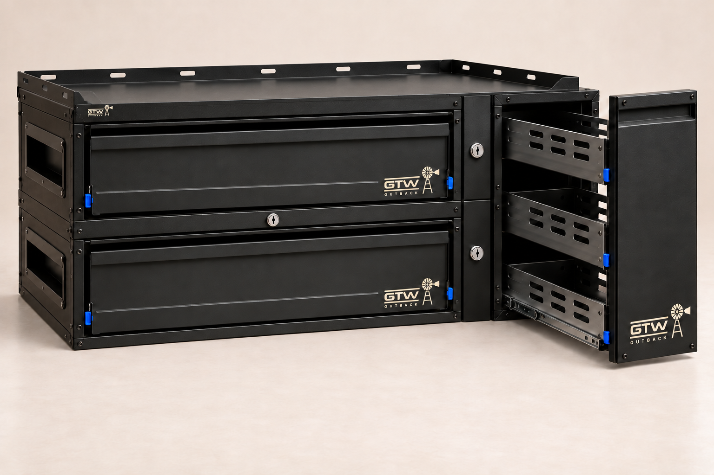
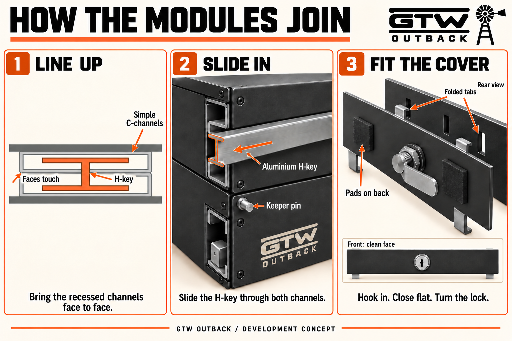
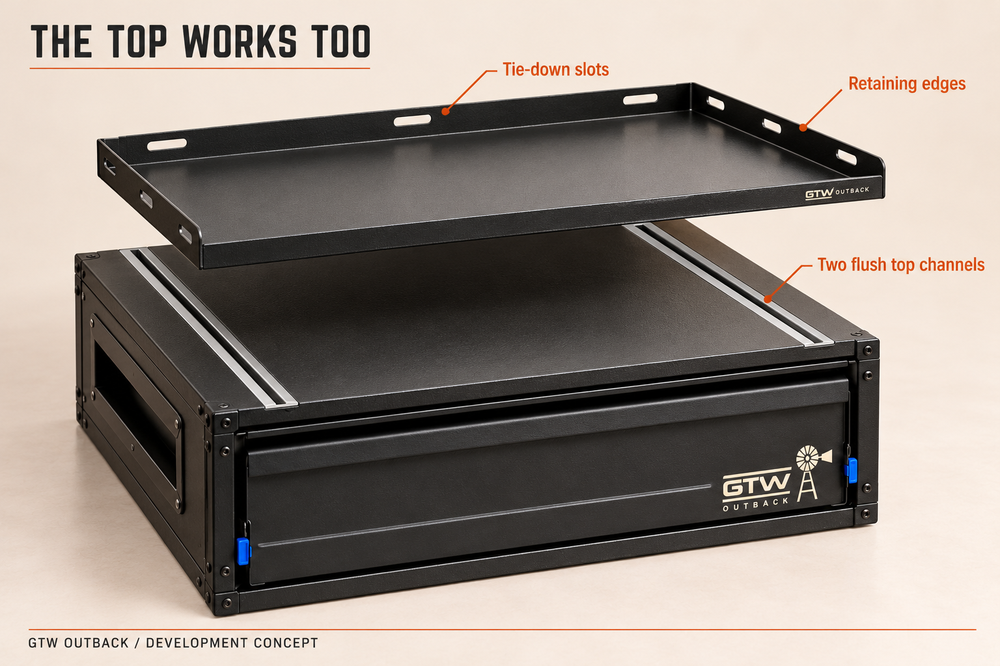

Bring the cases together.
The C-channels sit flush in the cabinets. Their open faces meet, so the cases touch.
GTW OUTBACK / INTERLOCKING FIT-OUT CONCEPT
There’s a better way to juggle work and play. Join your drawers, pantry and kitchen into a fit-out that can change with you.
See how the modules join ↓
THE CONNECTION, IN THREE STEPS
Two recessed C-channels. One sliding H-key. A flat cover plate to finish.

Open the drawing for a closer look.
The C-channels sit flush in the cabinets. Their open faces meet, so the cases touch.
One flange fits inside each channel. Slide the key along the tracks, then fit the keeper pin.
The flat fascia hides the join and retains the keeper pin. Thin pads on its back press against the cabinet.
CUT. FOLD. FIT.
One aluminium blank, integral folded tabs and a standard cam lock. Rubber or foam pads sit only on the cabinet-facing back of the cover.
A horizontal fascia spans the stacked-drawer join and stops short at both ends. Vertical covers finish the side-by-side joins without overlapping the horizontal strip.
One vertical cover matches one drawer-module height. Stack two drawers and use two vertical covers beside the pantry. Matching slot positions let the same covers work across the range.
The outer face stays clean. Rubber or foam pads sit on the cabinet-facing back, alongside the cam and folded tabs. They take up play when the cover is locked.
THE TOP WORKS TOO
The same recessed connection is built into the top of the drawer case, as well as the bottom and sides.

TOP COVER TRAY
The removable cover has a flat deck, raised retaining edges and laser-cut tie-down slots, like the working shelf above our drawer range. Lift it off to access the channels underneath.
The two top channels run front to back, inset from the case edges and open at both ends. They sit flush in the case.
FLOOR, WALL OR ROOF
The concept also allows drawers to hang from the canopy’s roof Unistrut using the same H-key connection. A mounting adaptor fixed to the roof Unistrut mates with the channels in the drawer top.
That gives the range floor-mounted, side-connected and roof-hung layout options. Roof fixings and load ratings remain part of prototype validation.